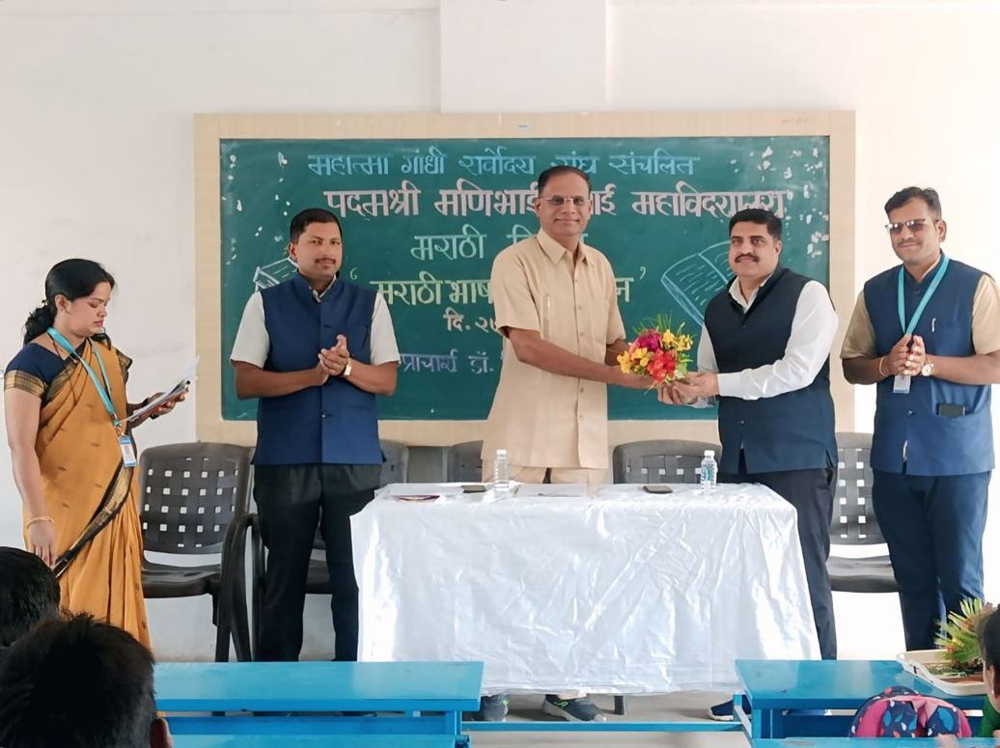

Preserving language — promoting literature — empowering rural youth

Overview
Department of Marathi has been established with the vision of conservation of Indian culture,
literature, and regional language, as well as promotion of the mother language in all sectors of human life.
It offers graduate programme B.A. Marathi since 2002, and M.A. Marathi since 2021.
The department aims to promote Marathi language & culture and study its history.
There are 2 faculty members. The future complex will have a library, seminar rooms, and research cubicles.
The department has a valuable collection of manuscripts and is actively collecting more.
Objectives
To create interest in Marathi language and literature among students.
To encourage creative usage of Marathi language.
To encourage applied usage of Marathi and thereby to enhance employability.
To encourage learners to create modern literature.
VISION
To develop personality development
To develop essential skills and potential in students for building up knowledge oriented society
MISSION
To provide opportunities for widening the vision of rural youth and make them competent and responsible citizen of India
Achievements
Awards, news
Features
Department Highlights
Chapter in Books by professors in the department have been published.
The professors of the department have Ph.D
The professors of the department have published state, national and international research papers.